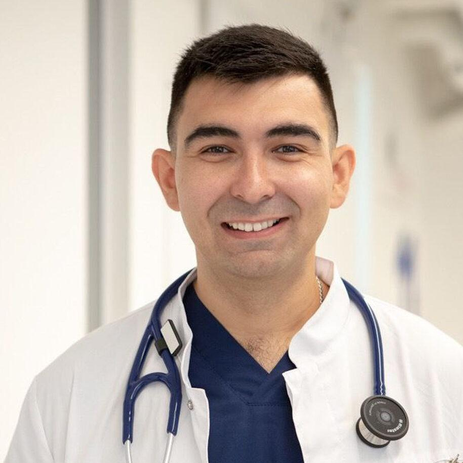
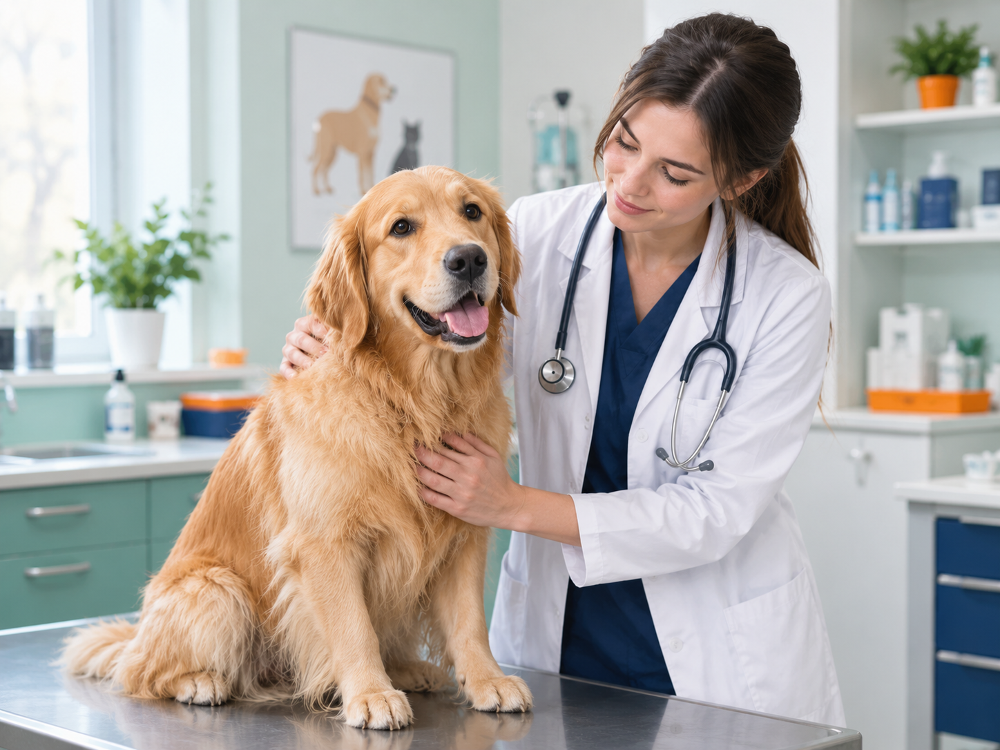
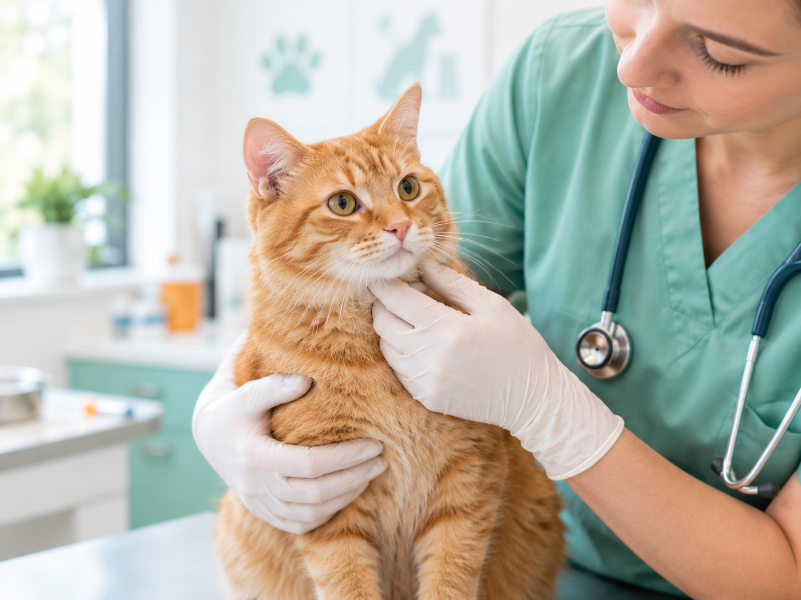
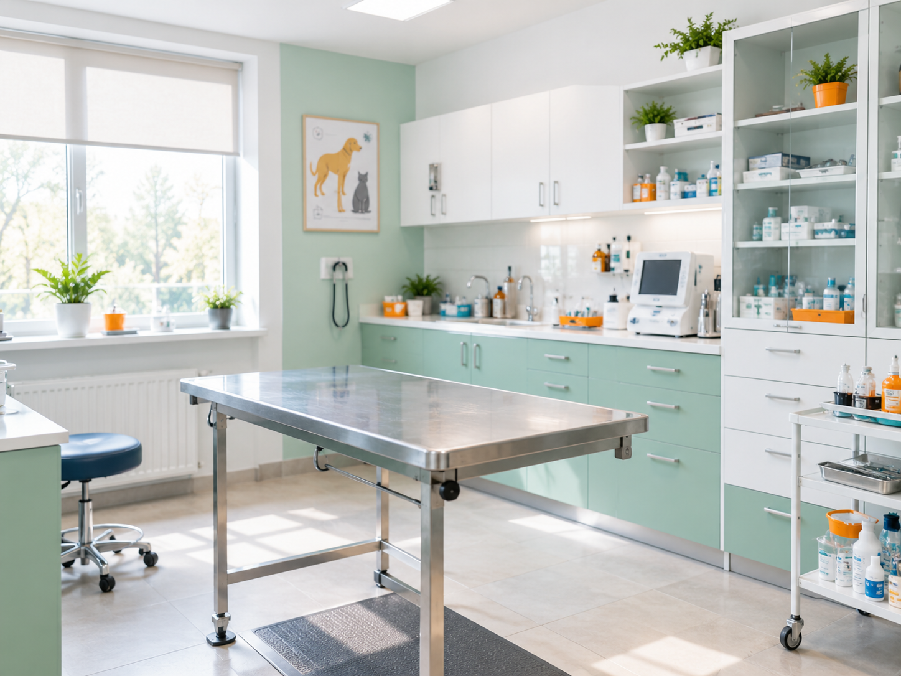
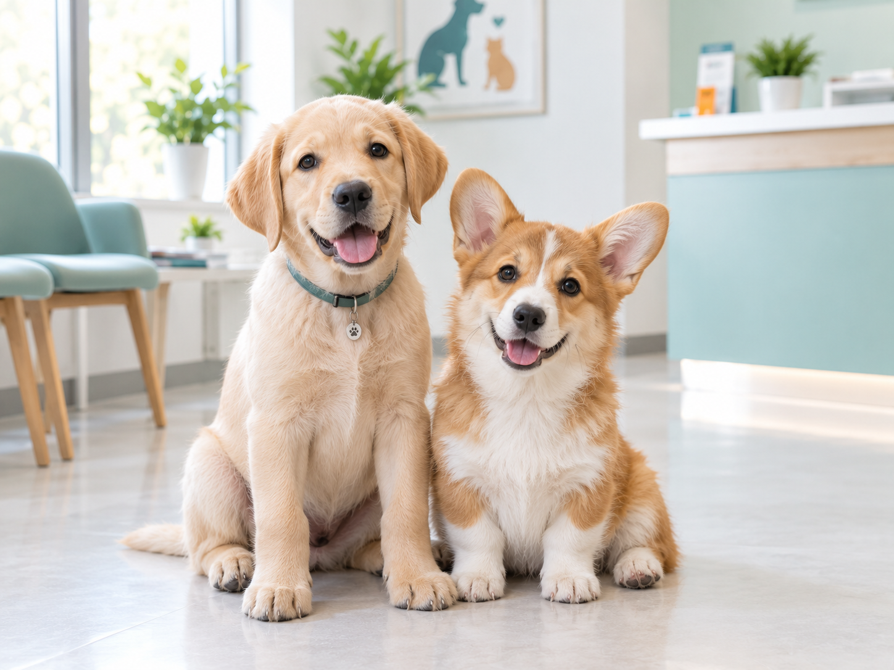
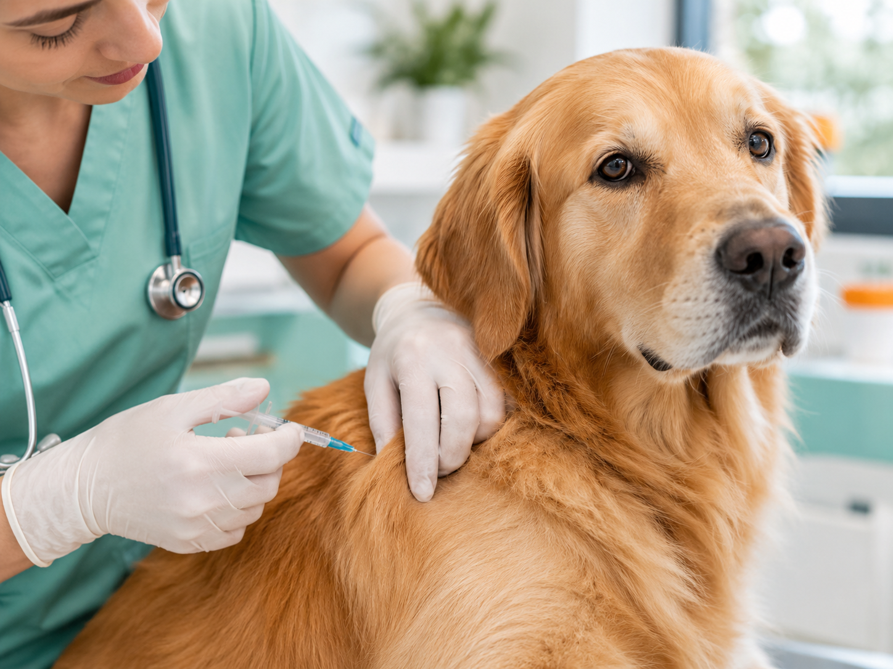
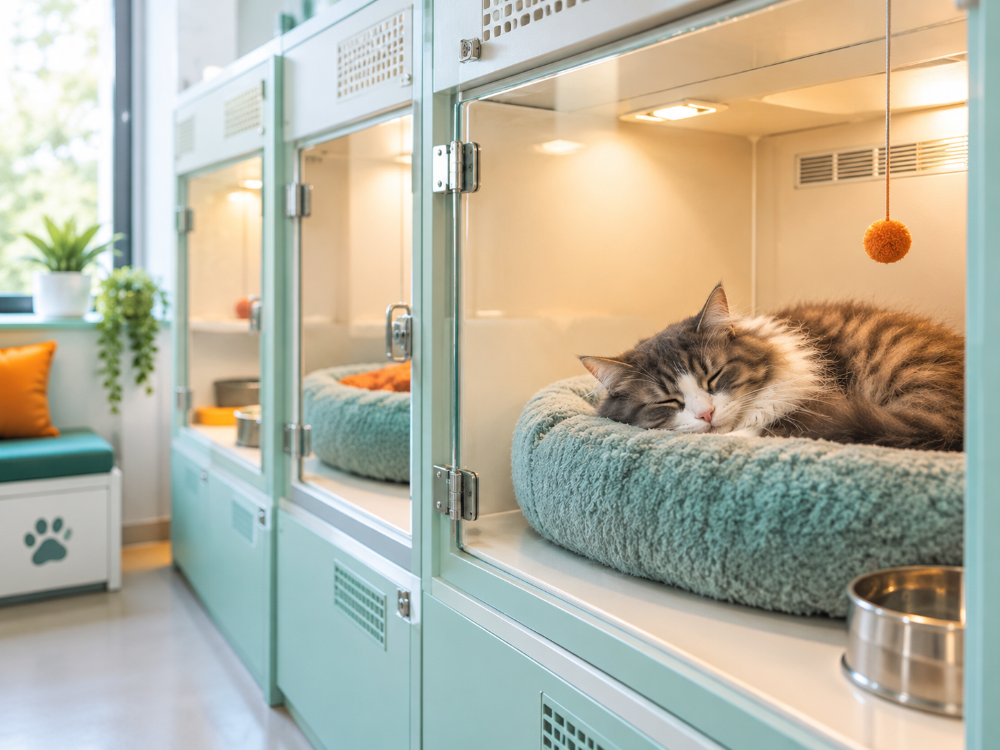

Терапія та діагностика
Огляд, УЗД, рентген і аналізи крові. Підходить як для планового чекапу, так і для термінового звернення. від 350 грн
Ветеринарна клініка. Цілодобово, без вихідних.
Ми лікуємо так, як лікували б власного кота: спокійно, без зайвих призначень і з поясненням кожного кроку.
У клініці працюють 9 лікарів різних спеціалізацій: терапевти, хірурги, стоматологи та кардіолог. Власна лабораторія видає результати аналізів того самого дня, а цілодобовий стаціонар дозволяє тримати тварину під наглядом стільки, скілька потрібно для одужання.
Ми завжди попереджаємо про вартість лікування заздалегідь і пояснюємо, навіщо потрібне кожне призначення – жодних прихованих послуг у чеку.
Переваги звернення саме до нас:
Нижче наведено перелік напрямів роботи клініки з орієнтовною вартістю. Точну ціну лікар називає після огляду.
Огляд, УЗД, рентген і аналізи крові. Підходить як для планового чекапу, так і для термінового звернення. від 350 грн
Планові й термінові операції будь-якої складності, включно зі стерилізацією та видаленням новоутворень. від 1200 грн
Щеплення від основних інфекційних хвороб і оформлення міжнародного ветпаспорта. Підбираємо графік індивідуально. від 450 грн
Чистка та видалення зубного каменю під седацією, огляд стану ясен і зубів. Регулярна чистка запобігає втраті зубів. від 900 грн
Огляд і щеплення без візиту до клініки. Лікар приїжджає у зручний для вас час. від 500 грн
Цілодобове спостереження, крапельниці та реабілітація після операцій чи важких станів. від 600 грн / доба
Зв’яжіться будь-яким зручним способом або одразу залиште заявку у формі – адміністратор передзвонить протягом 15 хвилин і підбере зручний час прийому.
м. Київ, вул. Велика Васильківська, 12
+38 (050) 123-45-67
hello@vetplace.ua
Цілодобово, без вихідних
За понад десять років маленький кабінет виріс у клініку повного циклу. Ось як це відбувалося.
Лікарка Марина Коваль приймає перших пацієнтів в орендованій кімнаті на 20 м². Обладнання складалося з одного столу для оглядів і невеликої аптечки, а записувались через дзвінок на особистий номер лікарки. Попри скромний початок, за перший рік клієнтами стали понад 300 родин із сусідніх будинків.
Відкриваємо стаціонар і власну лабораторію, команда виростає до п'яти лікарів. Тепер аналізи не треба возити в інше місто – результат готовий того самого дня. Саме тоді з'явилась цілодобова чергова зміна для термінових випадків.
Переїжджаємо у велику будівлю й переходимо на цілодобовий режим роботи. У новому приміщенні з'явилися окрема операційна, кімната для стоматології та зона очікування для тварин, яких краще тримати подалі одна від одної. Кількість лікарів подвоюється, а разом з нею – і кількість напрямів допомоги.
Понад 20 000 вилікованих улюбленців і власна виїзна служба для тих, кого важко привезти до клініки. Клініка отримує нову назву – Vet Place – і оновлений простір для прийому. Попереду відкриття другого філіалу та розширення команди хірургів.
Цифри, на які ми спираємося щодня.
Корисні матеріали від наших лікарів та новини клініки.
Перша вакцинація можлива вже у два місяці. Розповідаємо, які щеплення потрібні й чому не варто відкладати візит до лікаря.
Читати далі →Тепер діагностика стала точнішою та швидшою: результат лікар бачить одразу під час огляду, без повторних візитів.
Читати далі →Регулярна чистка запобігає втраті зубів. Пояснюємо, як часто потрібен огляд стоматолога й що робити вдома.
Читати далі →Що кажуть власники тварин, які вже звернулися до нас.
Прийшли з кішкою вночі, і лікар прийняв нас без черги. Усе пояснили, жодних зайвих призначень.
Робили операцію нашому лабрадору. Дякуємо за турботу й дзвінки після виписки, пес уже бігає.
Зручно, що можна викликати лікаря додому: двох котів возити до клініки було б складно.
Лікарі, які піклуються про ваших улюбленців щодня й щоночі.
Засновниця клініки. Понад 12 років допомагає тваринам і пояснює власникам кожен крок лікування.
Виконує планові та термінові операції, спеціалізується на м'яких тканинах і травмах.
Проводить чистку зубів під седацією й навчає власників, як доглядати за ротовою порожниною вдома.

Діагностує захворювання серця за допомогою УЗД і підбирає лікування для тварин будь-якого віку.
Наші пацієнти та простір клініки: тут ми щодня оглядаємо, лікуємо й доглядаємо за тваринами. Кожен куточок облаштований так, щоб улюбленцям і їхнім власникам було спокійно й комфортно.





